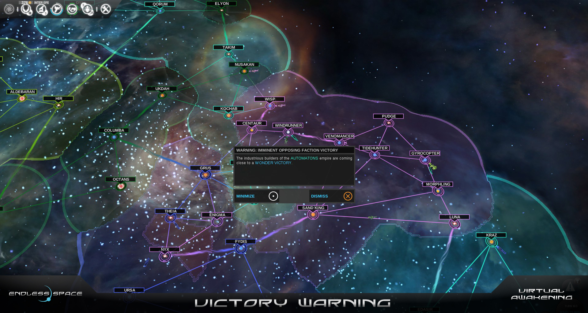

Stratégie tour par tour
Définition
Le jeu de stratégie au tour par tour est un genre de jeu vidéo de stratégie.
Comme son nom l'indique, l'action s'y déroule au tour par tour et le joueur doit donc « attendre son tour » pour jouer.
Cela implique, par opposition avec un jeu de stratégie en temps réel, que le jeu se focalise moins sur l'action et plus sur la prise de décision.
Ils se caractérisent également par la gestion des ressources. Les joueurs disposent en effet d'une quantité limitée de ressources
ce qui les pousse à réfléchir à la manière optimale de les utiliser. Enfin, les déplacements des unités y sont généralement restreints,
ce qui met l'accent sur l'optimisation de leur positionnement.
Examples dejeux dans cette catégorie :
- XCOM
- Total war
- Endless Space 
- Donjon de naheulbeuk